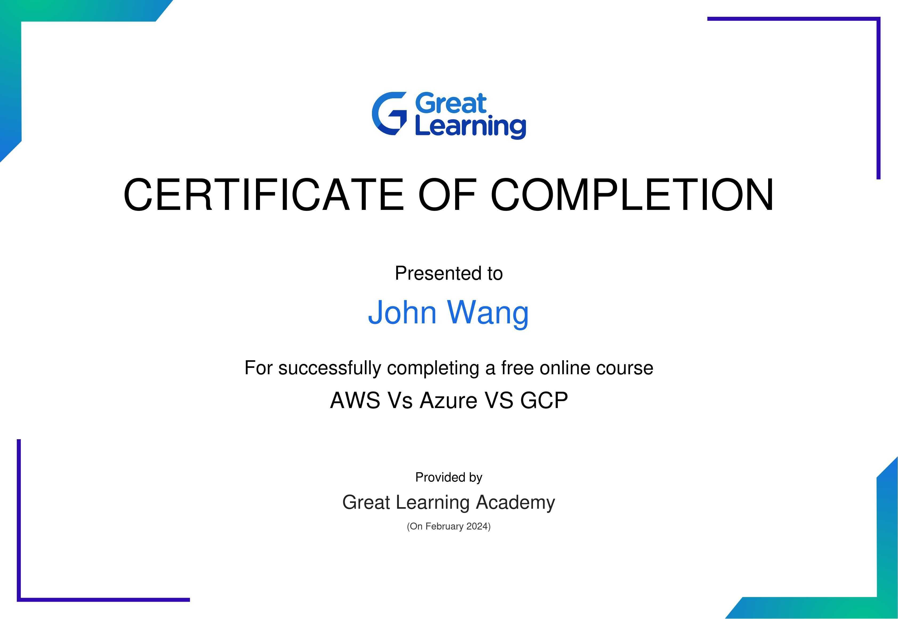
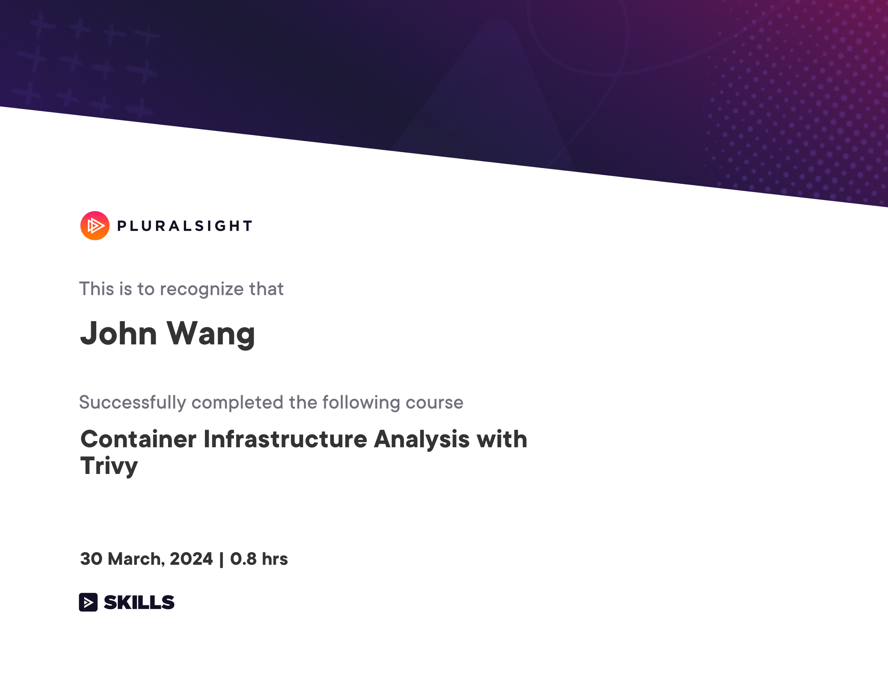
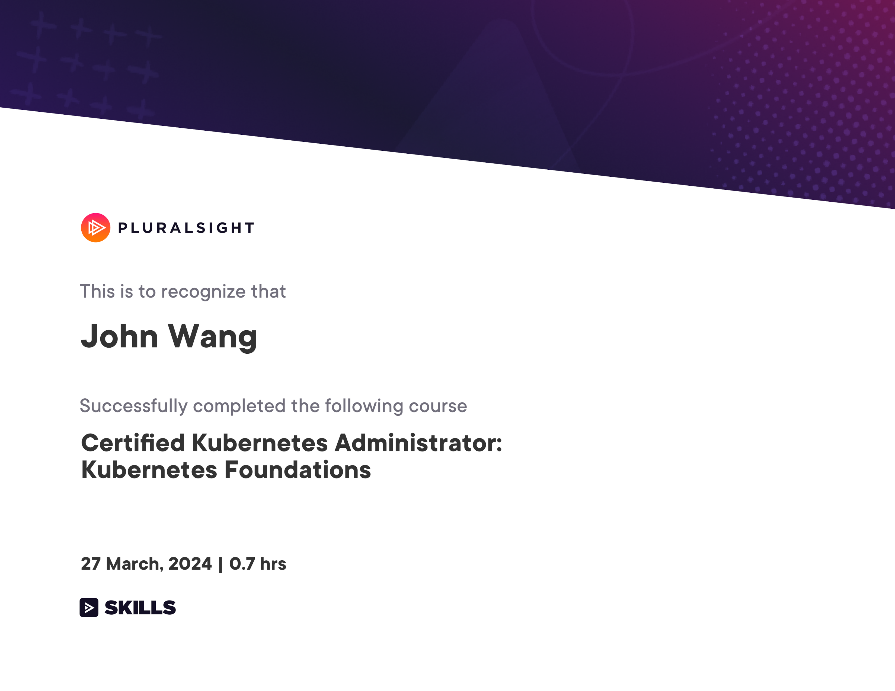
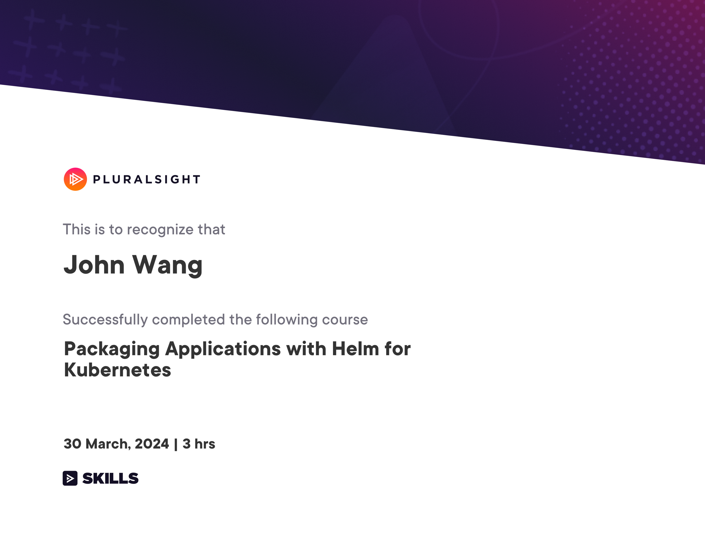
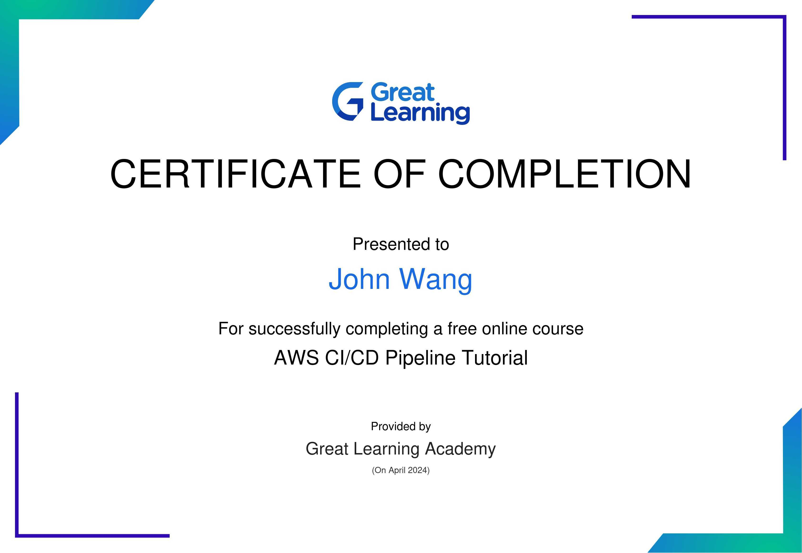

John's DevOps Certificates
Resources
Fundamentals (2)
Certified DevOps Generalist (DevOps-GEN) from DevOps Academy

AWS vs Azure vs GCP from Great Learning Academy by Vishal Padghan

Developer (1)
Certified DevOps Developer (DevOps-DEV) from DevOps Academy

Product Owner (1)
Certified DevOps Product Owner (DevOps-PO) from DevOps Academy

Project Management (1)
Certified DevOps Project Manager (DevOps-PM) from DevOps Academy

Security (2)
Certified DevOps Information Security Engineer (DevOps-SEC) from DevOps Academy

Container Infrastructure Analysis with Trivy from Pluralsight by Zach Roof

Kubernetes (2)
Certified Kubernetes Administrator: Kubernetes Foundations from Pluralsight by Anthony Nocentino

Packaging Applications with Helm for Kubernetes from Pluralsight by Philippe Collignon

AWS (1)
AWS CI/CD Pipeline from Great Learning Academy
